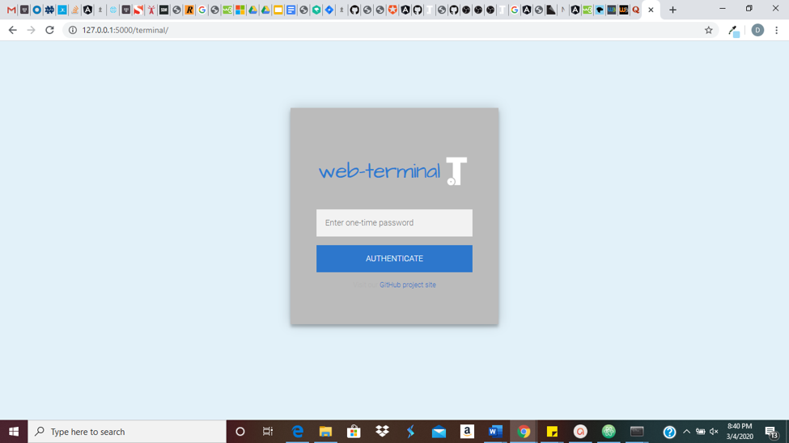

Over the past several weeks, we have created an initial minimum viable product that implements at a basic
level the major features that we previously identified as being goals for our project.
Throughout this time, as we continued to discuss what our overall aim for our project is, we settled on the phrase "Terminal on Training Wheels"
as being both a fun and fitting description of what we're working to develop.
We want to create a product that makes life easier for a user at any level, of course. But the tools we're implementing could be especially
helpful in allowing newer users to focus on their work as programmers as opposed to the complexities and inconveniences of the terminal with which they're programming.
We decided to have our terminal interface be browser-based, allowing us great customizability as well as providing ease of use.
We also decided to embody the phrase "Terminal on Training Wheels" as part of our branding, designing our logo with this idea in mind.
Following are visual previews of the major features we have chosen to implement as displayed in the browser.
Feature 1: Pop-up Man Pages
User can highlight and right click on a command - one that they have are currently inputting or one that they have previously entered -
and be given the option to view the man page for that command. A link to that man page will be opened in a pop-up window allowing the user
to easily reference helpful information without interrupting their workflow.
Feature 2: Display image preview using ls command
When a user runs the ls command, if there are any images in the given directory, a preview of that image will actually be displayed
to the user rather than just its title. This provides the user with an improved visual experience, allowing them to actually see and thus more quickly
identify the content they are looking for. Furthermore, interactive links are provided to other files within the directory so a user can click on and actually
view the file within their browser.
Feature 3: Insert breakpoints into pipelines
When a user is inputting a command with pipes, they can choose to add a breakpoint at a given pipe in the line, and be given back the output
up until that point. We have not yet fully developed this feature in terms of backend functionality. However, it is currently possible
for the user to highlight the command up to and including the pipe at which they'd like to add a breakpoint, and right click to be given
the option to do so. This will insert a red circle in place of the pipe to demonstrate the breakpoint location.
Other Features and Aesthetic Additions:
Button to Copy and Paste Previous Commands:
Side Menu Bar:
This dynamic menu currently includes helpful links to project website, GitHub repository, issue page. Eventually we hope to include the ability for a user to view text notes they've added to their directory as well as the ability to edit preferences such as color scheme.
Authentication Page:
User will be given a one-time password when they start up the web-terminal session. They will then be required to submit this token to authenticate themselves and begin using the web-terminal in the browser, ensuring the security of their session.